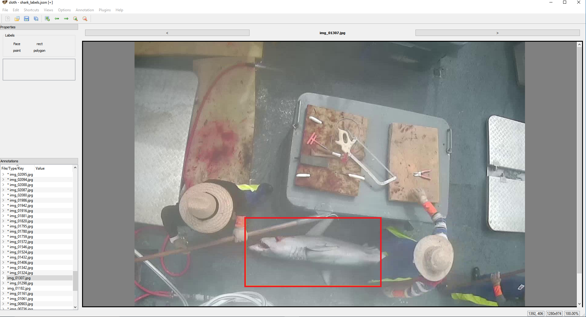
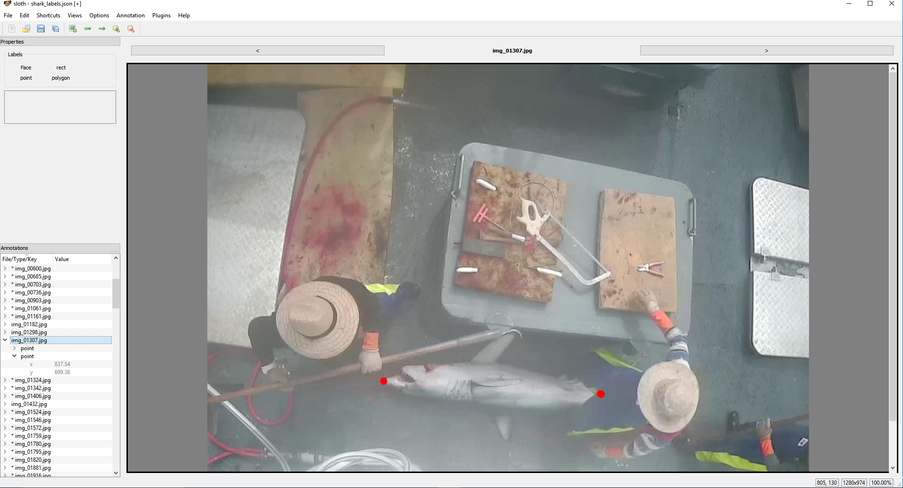
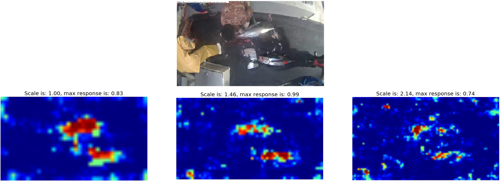
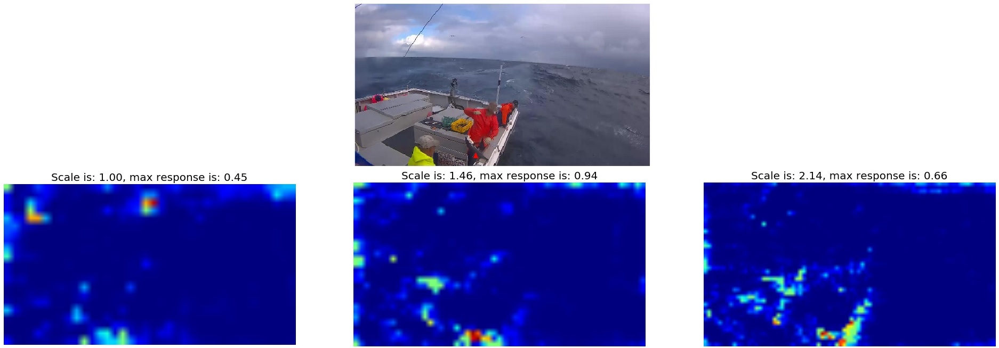
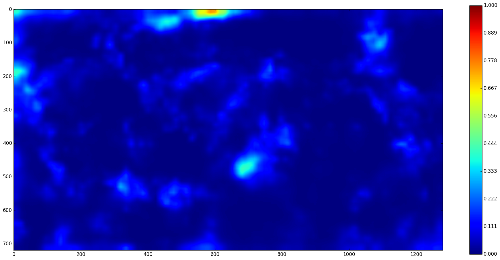
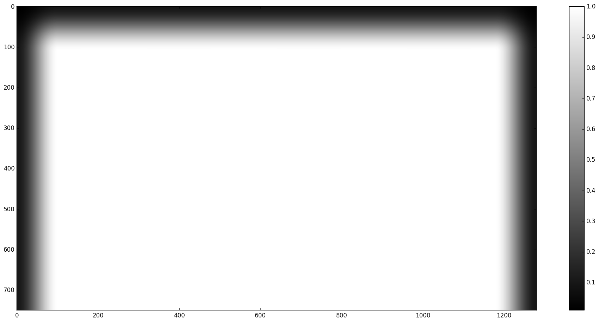
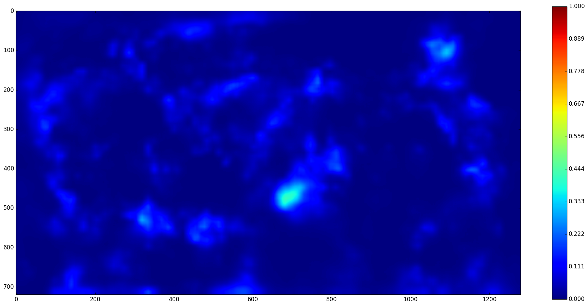
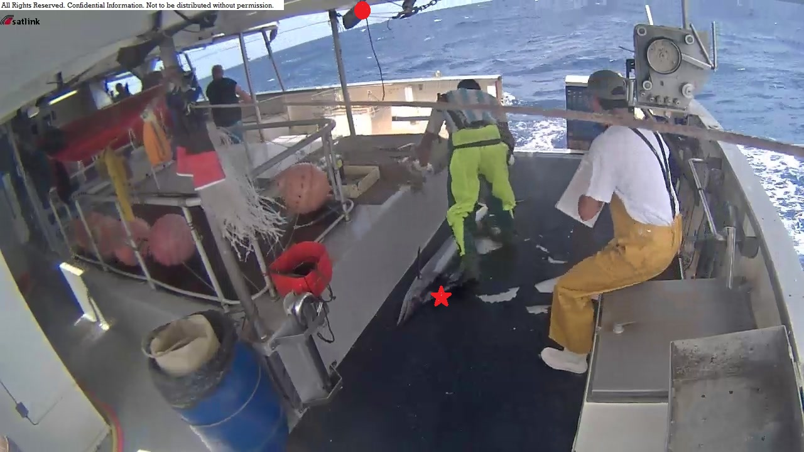
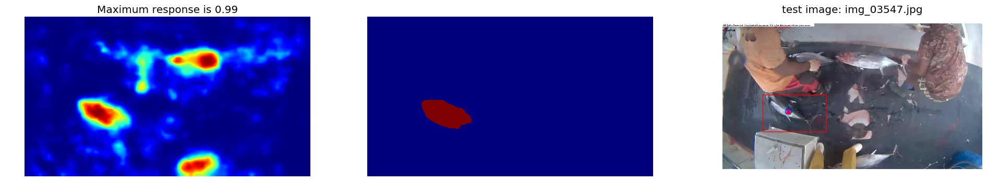

Di Wu's solution for Kaggle's "The Nature Conversancy Fisheries Monitoring"

“Nearly half of the world depends on seafood for their main source of protein. In the Western and Central Pacific, where 60% of the world’s tuna is caught, illegal, unreported, and unregulated fishing practices are threatening marine ecosystems, global seafood supplies and local livelihoods. The Nature Conservancy is working with local, regional and global partners to preserve this fishery for the future.”
— excerpt from competition’s description page.
The goal: predict the likelihood of fish species in each picture.

Submission & Evaluation Metrics:
Submissions are evaluated using the multi-class logarithmic loss. Each image has been labeled with one true class. For each image, you must submit a set of predicted probabilities (one for every image). The formula is then, $$ logloss = -\frac{1}{N} \sum^{N}_{i=1} \sum^{M}_{j=1} y_{ij} log(p_{ij}), $$
Target Categories:
Eight target categories are available in this dataset:
Albacore tuna, Bigeye tuna, Yellowfin tuna, Mahi Mahi, Opah, Sharks,
Other (meaning that there are fish present but not in the above categories), and No Fish (meaning that no fish is in the picture).
Imbalance of fish types: Table 1 is a list of number of images for different types of fish. Hence, whether for the fish detection pipeline or for the fish classfication pipeline, it is crucial to have some what balanced number of images for different types of fish. Otherwise, the network might end up biasing towards certain fish (Albacore in this particular case) and the cute Moonfish could be biased against.
Various lighting conditions:
Similar types: albacore vs. bigeye: Photos
The things that "makes life easier" in this competition:
One fish per image: Each image has only one fish category, except that there are sometimes very small fish in the pictures that are used as bait.
| Abbreviation | Fish Full Name | Pic num. | Percentage |
|---|---|---|---|
| ALB | Albacore tuna | 1719 | 44.35% |
| BET | Bigeye tuna | 200 | >5.16% |
| DOL | Dolphine Fish | 117 | >3.02% |
| LAG | Opah | 67 | >1.73% |
| SHARK | Various Shark | 176 | >4.54% |
| YFT | Yellowfin Tuna | 734 | >18.94% |
| OTHER | other fish | 299 | >7.71% |
| NoF | Not of fish | 564 | >14.55% |
| Sum | - | 3876 | >100% |
The Fish Classification Pipeline
1. Fish Detection
- Collect images for fish detection:
Thanks for the collective force from Kagglers, we have the rectangular boundingbox and mouth and tail annotations for the fish from the very begining using annotation software sloth. Note that because the annotations were done by different annotators, the mouth and tail position could be outside the rectangular boundingbox area. For every annotated fish, I extract around 10 times background images which is the same size of the annotated fish but does not overlap with the fish image.
 Fish annotations for shark of img_01307. Left: rectangular boundingbox; Right: mouth-and-tail annotation.
- Train A Bottleneck CNN:
I decided to go back to the good old HOG+SVM sliding window approach for pedestrian detection: collecting positive fish images and negativew background boat images. Building powerful image classification models using very little data.
Because the nature of the images are still natural images, so we can directly use the pretrained network on Imagenet and train a logistic regressor on top of the last convolutional layer. Note that the average size of the image is 180*180, however, the implementation of Resnet50 in Keras requires the input image's size larger than 197*197. Therefore, for training a fish/background detector using Resnet50, I always upsize the input image to 200*200.
- VGG19: originally I start with the pretrained VGG19 from keras, after training for 50 epoches (~100 second), the logistic regression reaches:
32716/32716 [===================] - 2s - loss: 0.0485 - acc: 0.9970 - val_loss: 0.1134 - val_acc: 0.9925
- Resnet50: coherently to the aforementioned blog post, resnet produces better generalisation features using features from the last pooling layer:
32716/32716 [===================] - 1s - loss: 1.1921e-07 - acc: 1.0000 - val_loss: 0.0465 - val_acc: 0.9956
Hence, we stick to Resnet50 for extracting convolutional features during the following experiments.
- VGG19: originally I start with the pretrained VGG19 from keras, after training for 50 epoches (~100 second), the logistic regression reaches:
- Hard negative mining:
We Follow the example of pedestrian detection using HOG+SVM pipeline:
- Fine-tune convolutional layers of the Resnet
In this stage, we can fine tune the convolutional layers of the ResNet. Because the incorporation of data augmentation into the binary detector:
ImageDataGenerator(rescale=1., featurewise_center=True, shear_range=0.2, zoom_range=0.2, rotation_range=360, horizontal_flip=True)
It's worth noting that the traininig accuracy is much lower than the bottleneck network because of the data augementation during the training. Also noted that because the network is fine-tuned all the convolutional layers, it takes considerably much longer time.11206/11206[===================] - 527s - loss: 0.1217 - acc: 0.9580 - val_loss: 0.0295 - val_acc: 0.9898
- Fully Connected Network(FCN) for fish detection:
Fully connected to fully convolutional: FCN was proposed by [Sermanet et al. 2014] and was populated by the paper by: [Jonathan et al. 2015]. By converting the last layer before pooling which is a softmax layer, the trained binary fish classifier can be converted into a FCN. According to the network architecture, the output represents a heat map whether a grid cell of 56*56 corresponds to a fish.
Multiscale detection: Because for our detection network, every output corresponds to a grid of 56*56 pixels. Moreover, there is a significant scale variation. Hence, I found it necessary to pass our FCN to several scales of the test image in order to adapt to the various scale of the images. Note that for training and two-class network for fish detection, the average fish size is 180*180 and the input image to the network is of size 200*200. Therefore, for the scales used in the experiment, I start from original image size and scale the image 1.1 times the size for 8 times. Therefore, in total there are 9 response maps from scale 1 to scale 1.1^8=2.14. As it can be seen in the following two illustrations (click to zoom in) that for larger fish (top), the small scale response map generates stronger confidence score whereas for smaller fish (bottom), upscaled response map generate stronger confidence score for the fish location.
 Illustrations of response maps of different input image size. For larger fish (top), the smaller scale response map(left) generates stronger confidence score whereas for smaller fish (bottom), upscaled response map(middle to right) generate stronger confidence score for the fish location. The response maps are upscaled to the original image size.Attention map: I notice that for the trained detector, some areas near the boundary could generate very high response because of the artifact of ships resembling the contours of fish. I heuristically design an attention map that lower the response map near the boundary of left, right and top but not bottom since the salient area of the image could also appear at the bottom of the image but not very like near the top (e.g., sky). Figure illustrate the effect of attention for cleaning up the false positives.
   Attention map generation. From left to right: (1) original response map; (2) attention map mask; (3) filtered response map; (4) the original response map will produce the red dot as the most confidence point for a fish in the image and the top area will be incorrectly chosen as the fish region, after the adoption of attention map, the red star will be adjusted to have higher salience score.Generating boundingbox from response maps: Now we have the response map and the useful information from the challenge that "Each image has only one fish category", we can simply choose the maximum response point as the centre of the fish and choose the connected region that higher than a multiplying threshold and expand the region by a factor. By grid searching, using Intersection over Union (IoU) as a evaluation criteria, I set the multiplying factor to be 0.4 and expanding factor to be 1.4. (A side note: in the IoU criteria, the predicted area is counted only as half. The reason is that we do want to have slightly larger area for the fish detection in order to have a whole fish detected, given that for fine-grained fish classification, the details of the fish are of crucial importance and we want the detected fish as complete as possible.)
Evalutation metrics for detection: For PASCAL VOC the highest confidence bounding box with 50% overlap is considered correct; all others are incorrect. The paper [Hoiem et al. 2012] gave a details analysis of detection error. However, in this experiment, I relax the condition that 30% overlap will suffice a correct detection.
2. Fish Alignment
I didn't manage to do the fish alignment as the "Right Whale" challenge has done. Partly because the fish images in this challenge various a lot and sometimes the fish head/tail doesn't always appear simultaneously. (But should we have done it?) --> The classification network simultaneous classify the fish and predict the head and tail location of the fish?
3. Fish Classification
Again, follow the blog post of "Building powerful image classification models using very little data". Applying this single network for classifying extracted fish from "fish detection" directly, I obtain my very first result:

Clipping: A note here that since the evaluation metric here is cross-entropy and it heavily penalises wrongly classified results with high confidence. I use the clipping [1. Log Loss] [2. Making Sense of Logarithmic Loss] for all the prediction as:
$$ Pred' = clip(Pred, (1 - mx) / 7, mx) $$
where mx is a clipping variable I heuristically chosen as 0.95.
Rotation images average: I also rotate the test image 90 degrees fours times and have the averaging prediction.

Scaled images average: NOT DONE YET!
From analysing our previous result, I found out that for day time boat when the color hue is "normal", the network can classfy the fish correctly with quite high confidence. However, when there is a yellow-ish hue night boat, the fish classification network unfortunately tends to classify a lot of fish into the "Yellow Fin Tuna (YFT)" category. This is due to limited examples for training the network to be lighting invariant. Hence, I endeavor to design two networks for the day and night light condition fish classifier.

A holistic Fish Classification
Albeit rather brute-force, using the whole image as fish classifier has achieve really promising results, sometimes better results: [blogpost: Worse performance on cropped images?] I assume it could be due to the following two reasons:
Training details...
Ideals that I didn't implement or fail to make it work
-
Kaggle Right Whale Recognition from deepsense: For fish detection, I actually start from their blog post where whale detection pipeline is the nowadays popular grid based. I experimented with their code but didn't manage to have the network converge for this fishery data.
-
DetectNet: Deep Neural network for Object detection in DIGITS. The DetectNet data representation is inspired by the representation of the paper by: [Redmon et al. 2015].
Conclusion
REFERENCES
Redmon, J., Divvala, S., Girshick, R., and Farhadi, A. 2015. "You Only Look Once: Unified, Real-Time Object Detection." arXiv [cs.CV]. http://arxiv.org/abs/1506.02640.
Long, Jonathan and Shelhamer, Evan and Darrell, Trevor. CVPR2015. "Fully Convolutional Networks for Semantic Segmentation".
P. Sermanet, D. Eigen, X. Zhang, M. Mathieu, R. Fergus, and Y. LeCun. Overfeat: Integrated recognition, localization and detection using convolutional networks. In ICLR, 2014.
Hoiem, D., Chodpathumwan, Y., and Dai, Q. 2012. Diagnosing Error in Object Detectors. Computer Vision – ECCV 2012, Springer Berlin Heidelberg, 340–353.